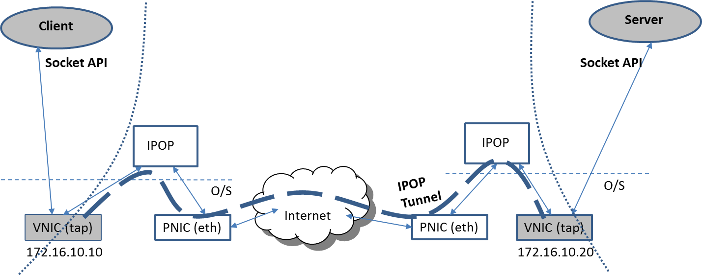

1. Goals
1.1. Motivation
In the early days of the Internet, devices were able to directly communicate end-to-end with each other in an environment where cyber-security threats were uncommon. Much has since changed, and today the Internet presents an environment where security and privacy concerns are at the forefront, and where end-to-end connectivity among end users has been hindered by user mobility, IPv4 address space shortage and the widespread use of Network Address Translators (NAT) and firewalls.
Nonetheless, with the advent of cloud computing and online social networking (OSN), Internet users and applications increasingly require the ability to communicate end-to-end among peers with privacy and integrity (e.g. among personal mobile devices, or among cloud virtual machine instances deployed over multiple providers). Centralized services that mediate end-to-end user communication raise major concerns in privacy, fault-tolerance, and performance and are thus inadequate for many envisioned usage scenarios, for reasons including:
-
Potential Privacy Loss/Leakage- Centralized services such as online social networks (OSNs) allow users to communicate with their peers; because user-to-user communication goes through a centralized backend (e.g. Facebook), the service provider can view and store all interactions (e.g. wall posts, messages, photos, etc) conducted among social peers. A provider’s privacy policy may change over time; thus many users worry about data that they would like to be restricted to a group of people (e.g. their friends) potentially being disclosed to others. In addition to OSN providers, centralized virtual private network (VPN) providers can also intercept and observe IP-level communications between peers. In contrast, IPOP follows an approach where peers communicate privately, end-to-end, effectively thwarting monitoring attempts by a centralized entity.
-
Performance Limited by Service Providers- In addition to privacy concerns, centralized services often constrain interactions between peers in order to scale to large numbers of users through the interfaces (APIs) exposed - for instance, by imposing limits in bandwidth, file sizes, and the types of interactions (e.g. only certain file types/sizes may be allowed). In contrast, IPOP follows an approach where peers are not constrained by any provider APIs or limits in their communication - the API that is exposed by IPOP is the standard IP network protocol, hence supporting applications that work over IP networks.
-
Fault tolerance - Centralized services can become unavailable to users due to outages, cyber-attacks, and government censorship, preventing user-to-user communication - even if there may be an Internet path between them. In contrast, IPOP supports direct peer-to-peer communication when there is an Internet path between the users.
In this context, IPOP has been designed to address the following requirements:
-
User-defined and User-friendly Virtual Network Links - Users must be able to define which devices to link to, using simple-to-use interfaces and leveraging well-adopted standards. IPOP allows users to establish relationships between devices they wish to connect using user-friendly social networking interfaces, through an OSN provider of their choice, or their own private service.
-
Self-configuring Virtual Network Links - Private links must be configured without exposing users/administrators to the challenges of configuring/exchanging security credentials, and managing endpoint IP addresses that may be private and change dynamically due to mobility and NATs.
-
No Dependence on External Virtual Routing Infrastructure - The virtual network must be able to encapsulate, tunnel, encrypt, and route packets at the endpoints themselves, without relying on the deployment of managed virtual routing infrastructure on the Internet.
1.2. Objectives
The vision for the IPOP project is to provide an open-source platform for user-centric Software-Defined Network (SDN), allowing end users to define and create their own VPNs connecting their own resources over the Internet.
The IPOP (IP-over-P2P) system creates an overlay virtual network supporting the vision that future Internet applications will increasingly demand direct, secure end-to-end P2P communication among devices. IPOP creates P2P links among endpoints, which can be mobile and/or NATed; provides virtual private IP messaging tunneled through P2P links as a core service; and enables the creation of peer-to-peer virtual private networks (P2P VPNs) of various topologies. IPOP also supports tunneling of Layer-2 Ethernet frames, in its recently introduced “switch mode” operation. Thus, IPOP can be configured to work as either a Layer-2 or Layer-3 overlay virtual network.
A key objective is to deliver the benefits of privacy, authentication and integrity in end-to-end communications to a wide range of users - including individuals, users/administrators aggregating resources across cloud infrastructures, and researchers studying next-generation cloud middleware. To accomplish this objective, IPOP requires no networking infrastructure deployment beyond endpoint resources, leverages user-friendly interfaces for configuration, and uses virtualization, supporting standard Internet protocols and existing applications.
Another objective of the project is to be community-driven and encourage contributions from developers. We use the liberal MIT license; the software development process follows open-source best practices, and the system has been designed in a modular fashion and incorporates standards and third-party OSS implementations to the extent possible, and is designed to run on a variety of platforms, including embedded systems, mobile devices, personal computers, and cloud servers.
The resulting system is an overlay where every participating device has links to “social peers” (e.g. devices owned by friends in an online social network, or cloud-hosted computers that join a virtual cluster) and virtualization enables peers to communicate using IPv4/IPv6 standards, thus supporting existing, unmodified applications and allowing new applications to be developed using well-understood, widely-adopted Berkeley sockets interface. IPOP accomplishes this by implementing the core functionality of tunneling IP packets (or Ethernet frames, in switch-mode) over peer-to-peer “TinCan” links and exposing a flexible API to control the setup and management of TinCan links to create various software-defined VPN overlays.
To address the requirements listed above, IPOP provides the following functionalities:
-
IPOP allows users to define relationships through easy-to-use OSN interfaces. These relationships can be among individual users, as well as group-oriented, supporting use cases including user-facing devices and friend-to-friend communication, as well as cloud servers connected as logical groups to form virtual clusters. They can be inherited from existing OSNs, or established in private/custom OSNs, and managed dynamically.
-
IPOP automatically maps OSN relationships to configure and manage virtual network links. This includes the generation and exchange of security credentials, setup of peer-to-peer links, virtual IP addresses, and overlay routing across multiple links.
-
IPOP allows each endpoint device to not only pick and inject packets, but also provides a framework for overlay routing across multiple links. To bootstrap itself, IPOP leverages external infrastructure/services to set up links - using standard protocols for messaging/notification (XMPP) and assistance in NAT traversal (STUN, TURN). Once links are established, IP-over-P2P messaging does not depend on the external infrastructure - it is done in a peer-to-peer fashion.
1.3. Use cases
There are several use cases for which IPOP provides useful features, as illustrated in the following examples. These examples highlight scenarios that use two of the IPOP “controllers” that have been developed thus far - SocialVPN and GroupVPN. The functionality of these IPOP controllers is described in detail later in the white paper, but it is important to introduce their main characteristics at this point: in SocialVPN, each individual user, on his or her own, is able to determine which other individual users they wish to connect to by a VPN. In GroupVPN, instead of individual user-to-user relationships, a group relationship is established: each user in the group is able to communicate to all other users in the group, without having created a friendship link to other users. For instance, let us consider Facebook as a representative OSN to highlight differences between these two use cases. In SocialVPN, an individual user would only communicate with the Facebook friends they have explicitly accepted to join their social network. In GroupVPN, instead, a user with the role of group leader would create a Facebook group and invite users to join; any user who joins the group would automatically be able to communicate with all other users who also joined the group - even though they may not be Facebook friends to each other. In essence, in GroupVPN, users delegate the establishment of trust to the group leader, whereas in SocialVPN, each user is in control of who they trust.
1) Distributed virtual clusters
Cloud users are becoming increasingly wary of vendor lock-in and expect the ability to painlessly move their workloads across cloud providers. Several projects are designed with multi-cloud deployment as a fundamental tenet. A motivation for IPOP is to facilitate such cross-cloud mobility by providing a virtual networking technology that requires little configuration and infrastructure.
For example, Alice runs a multi-tier web service consisting of a front-end server, application servers, and a database on a single cloud provider. For enhanced network security, Alice only assigns a public IP address to the front-facing web server and runs the application servers and database in a NAT-ted virtual network in the cloud. Alice then decides to move some of the application servers to a different cloud provider and restricts their Internet exposure with a
similar NAT-ted network environment. Without IPOP, Alice needs to update all of the configuration files pointing to the application servers and is required to create port
forwarding rules on the NATs at each cloud provider. She also has to ensure that all traffic between the front-end server and the application servers is encrypted because the VMs would be communicating over the open Internet.
Alice could potentially also use emerging SDN or overlay networking techniques to enable this cross-cloud migration; however, such solutions require networking expertise along with additional resources such as virtual switches/routers.
Instead, IPOP’s GroupVPN can be used as the networking fabric to create virtual machine clusters deployed across multiple cloud providers (private and commercial) - without requiring any special support from the cloud providers, only the ability to run VMs. This allows software that runs on clusters (e.g. job schedulers, multi-tier Web frameworks) to seamlessly run across cloud providers, enabling greater flexibility in the management of workloads and costs by reducing concerns about vendor lock-in.
By running IPOP’s GroupVPN in her virtual machines, Alice is able to maintain their private IP addresses because TinCan links are automatically re-created upon migration, even if the VM is behind a different NAT. IPOP node identifiers are preserved, and virtual IP addresses are decoupled from the physical infrastructure IP addresses.
IPOP’s “switchmode” allows it to work as a layer-2 virtual network, processing Ethernet frames and handling broadcast requests. This is important in deployments that use protocols other than IP-based, and also enables applications to bypass the IPOP overhead on LAN communications.
2) Mobile computing and social network overlays
In the case of mobile computing, it is typically the case that a mobile user needs to communicate with trusted nodes to share either personal information (e.g. check-in at a restaurant), media (e.g. photos or videos), or computation (e.g. volunteer computing for mobile). For instance, many smartphones run a media server which facilitates media sharing with other devices in the same LAN.
IPOP’s SocialVPN creates a virtual LAN which makes it possible to extend this media sharing capability with social peers regardless of their location. As another example, through the VPN, users can make direct mobile SIP-based calls over the Internet using mobile softphone apps such as CSipSimple, thus enabling encrypted calls that are not logged by a centralized server.
With IPOP’s SocialVPN, trusted peers are mapped to a virtual private IP address which is preserved as the mobile devices move across different networks (e.g from/to WiFi to 3G/4G). IPOP also supports IP multicast on within the virtual network; therefore LAN network discovery protocols such as UPnP and MDNS work out of the box.
IPOP’s SocialVPN can be used as the communications layer to enable users to collaborate, share directly with friends over private end-to-end network links. This allows social peers to bypass the need to communicate through an online social network provider for privacy-sensitive or low-latency/high-bandwidth applications, while still benefitting from the ability to discover and establish friendships through an OSN provider.
2. Background
2.1. Software-Defined Network (SDN)
Recent developments in software-defined networking (SDN) have enabled unprecedented flexibility in the provisioning of elastic cloud services by data center providers. In SDN-enabled technologies, a user (typically a network administrator) is given the ability to program the behavior of network fabric (typically switches and routers) through a standard, programmatic interface (e.g. OpenFlow).
Yet, several use case scenarios require users to deploy virtual networks that span across multiple cloud providers, mobile device endpoints, and are subject to device mobility and VM migration. In these scenarios, prevailing SDN techniques are challenging to deploy, because no single entity has the capability to program SDN devices end-to-end - for instance, mobile Internet users Alice, Bob and Carol may wish to create a software-defined network connecting their devices together but do not have the authority to configure any networking equipment other than their own devices.
The techniques currently available for typical “data center SDN” technologies do not apply in a straightforward way when the endpoints are personal devices managed by multiple end users and connected by the public Internet. In contrast, IPOP enables setup and management of private end-to-end tunnel links allowing virtual networks over shared infrastructure. It reuses existing standards and implementations of services for discovery and notification (XMPP), reflection (STUN) and relaying (TURN), facilitating configuration with an approach where trust relationships maintained by centralized (or federated) services are automatically mapped to end-to-end overlay links.
2.2. Overlay Virtual Networks in Cloud Computing
Over the past few years, major IaaS cloud providers have introduced network virtualization capabilities allowing users to create their own isolated virtual network and define IP address ranges and subnets on the cloud.
IaaS vendors, such as Amazon EC2,Windows Azure, and Google Cloud Engine, also enable additional features such as specifying DHCP and DNS setting for the private network. Moreover, users can define routing rules and network access control for the network and IPSec VPN gateways which make it possible to combine multiple different subnets from private or public clouds.
It is clear that the cloud computing industry understands that network virtualization is a crucial component for cloud provisioning; however, there is no open standard for interoperability, thus placing the entire burden on users desiring cross-cloud deployments.
To address challenges in network virtualization across different clouds, various third-party commercial solutions have emerged. VMware NSX is a network virtualization technology that runs at the hypervisor level, recreates the whole network in software at both layers 2 and 3, and also supports Xen and KVM. It uses a virtual switch in the hypervisor to connect to other virtual switches, virtual bridges or virtual routers, while only requiring an IP backplane for connectivity. It also supports virtual networking across different data centers since the virtual networking components connect over IP. However, this solution is difficult to support across multiple providers, as it requires privileged access to the hypervisor.
Both VNS3 and RightScale’s Cloud Management products lets users provision virtual machines in the same virtual private network across different public cloud providers through a common interface. VNS3 runs a virtual appliance manager at each cloud provider and implements a virtual switch/router, and a VPN gateway in the appliance; hence, VNS3 is not dependent on the underlying cloud provider’s virtual networking technology because it re-implements its own in the cloud on top of the IP backplane. RightScale provides a unified wrapper around the virtual networking API of various cloud providers and greatly simplifying the deployment of virtual networks spanning multiple public clouds. However, these third-party solutions require additional resources to configure and manage these networks, again placing a significant burden of configuration and management on end users. While this burden may be acceptable in environments where dedicated staff is employed to manage the virtual network components, it becomes a significant barrier for small/medium-scale deployments - a typical use case of clouds. IPOP targets the needs of users who are not willing to afford the configuration and management of additional virtual network infrastructure.
Academic and industry research have also explored applicable solutions for cross-cloud virtual networking. Researchers at IBM have developed VirtualWire, which implements a layer 2 virtual network tailored to deployment of legacy applications and VM migration across clouds. Virtualwire is a hypervisor-level virtual network integrated with the Xen-Blanket nested virtualization technology, enabling VM migration across public clouds. VIOLIN uses a very similar approach to Virtualwire providing layer 2 communication with networking components such as switches and routers implemented purely in software. A drawback with these approaches is that users are still required to configure virtual switches, routers, and deploy their own DHCP and DNS servers within the virtual network.
Another solution is CloudNet which advocates MPLS-based VPNs to bridge virtual networks and provide layer 2 connectivity across different cloud providers. However, this approach requires public cloud vendors to expose compatible MPLS-based VPN gateways and layer 2 access to their networking virtualization technologies. Major public cloud providers do not support layer 2 connectivity.
VNET also provides layer 2 connectivity across private clouds and it is implemented at the hypervisor level. This is accomplished through a layer 2 proxy that bridges the two networks
but this approach would not work on public clouds since access to the hypervisor and layer-2 networking is unavailable to users.
All of these previous works do not explicitly deal with NATs and firewalls, and assume the availability of VPN gateways and virtual routers with public IP addresses. As cloud usage increases, the pool of IPv4 addresses become more scarce — compounded by recursive virtualization and the use of containers — establishing end-to-end virtual network links across NAT-constrained devices becomes increasingly important.
VINE is a layer 3 virtual networking alternative which supports NAT/firewall traversal through relaying. However, it requires users to manage and configure the virtual routers if an application server is migrated across clouds, and does not provide NAT-traversed end-to-end tunnels that bypass a relay/router node.
OpenVPN is a solution that is applicable in both cross-cloud VPN environments and mobile virtual networking. However, OpenVPN follows a client/server architecture where all IP traffic
is routed through a central gateway. This incurs high latency and creates a resource bottleneck.
Many other solutions improve on the OpenVPN model; for instance, Hamachi uses a proprietary central server to setup P2P connections between hosts, even through NATs and firewalls. IP traffic is tunneled over these encrypted P2P connections.
Other approach such as Tinc, Vtun, and N2N all create mesh VPNs where nodes create direct connections to each other, but they require nodes to be openly accessible over the Internet. While these solutions can potentially be used to enable cross-cloud virtual networking, they are not currently supported by mobile platforms, and do not provide a flexible overlay architecture that supports other VPN topologies, such as those implied by friend-to-friend social network graphs.
3. Architecture and Features
3.1. Overall Architecture
From a developer’s perspective, IPOP consists of three major modules depicted in Figure 3.1:
Figure 3.1: Major IPOP modules: IPOP-Tap, IPOP-TinCan, and Controller
IPOP-Tap: this is the module that interfaces with a virtual network interface (VNIC) to be able to pick/inject IP packets from/to the virtual network. It is responsible for maintaining send/receive queues, and using the system call interface of the O/S (e.g. Unix ioctl()) to configure and read/write from a virtual network interface (tap device). It also handles the encapsulation of an IP packet by adding the required IPOP headers for routing over the P2P links.
IPOP-TinCan: this is the module that handles links between pairs of IPOP nodes. Specifically, it manages each “TinCan” link that a node has. A “TinCan” link is a private end-to-end connection between two peers through which the virtual network’s IP traffic is tunneled. IPOP-TInCan handles the setup/tear-down of each link (link setup thread), and the sending/receiving of tunneled IP packets over these links (packet handling thread). The link setup thread uses external services through the XMPP protocol to discover and notify peers for which TinCan links are to be formed, and STUN/TURN protocols to establish links between nodes that are constrained by NATs (Network Address Translators). It also exposes a management API to the controller module. The packet handling thread uses the IPOP-tap module to interact with the virtual network, and the Berkeley sockets API to send/receive tunneled packets through the physical Internet.
Controller: this module is responsible for configuring and controlling the setup and management of a collection of IPOP-TinCan links to form overlays, using the API exposed by the IPOP-TinCan module. The controller is responsible for establishing the policies for topology creation of an IPOP overlay (e.g. on-demand topology in GroupVPN, or social graph topology and multi-hop routing in SocialVPN), and determining when links are created/destroyed (e.g. when a peer node’s presence is detected, or on-demand triggered by IP traffic), using the IPOP-TinCan mechanisms exposed by its API to implement the policies.
3.2. Features
1) Supporting unmodified TCP/IP applications through P2P tunneling
It helps to understand the architecture and the functionality of the major modules of IPOP by looking at the system from different perspectives. Starting from the perspective of applications (Figure 3.2), the most important benefit of network virtualization in IPOP is that it supports existing, unmodified applications. From the application’s perspective, IPOP creates a virtual private network supporting existing socket APIs exposed by the O/S through a virtual network interface (VNIC) and end-to-end tunneling, such that existing applications (IPv4 or IPv6 based) can execute without requiring modifications, and new applications can be deployed using well-known Berkeley socket APIs. For performance reasons, IP tunneling in IPOP typically takes place across a single TinCan link, but multi-hop routing over several TinCan links is also supported in the architecture

Figure 3.2: IPOP exposes a virtual network to applications, thereby supporting the standard Internet IP protocol and existing, unmodified applications
2) Leveraging Social Relationships in IPOP
In order for IPOP to provide the virtual network’s perspective illustrated above, it is necessary for users to establish who they want to link with in their virtual network, and to configure and deploy IPOP software on their devices. Figure 3.3 illustrates the process for users to establish relationships, and how IPOP utilizes XMPP messages to establish TinCan links.
Figure 3.3: User establish relationships to create point-to-point links to other users, or establish groups, through an online social network (OSN) supporting the XMPP protocol.
In order to configure IPOP virtual networks, the user needs to determine which users they wish to connect to. This is done through an online social network interface - independently from using IPOP. In the typical case, a user creates/authenticates to an account in an online social network (OSN) server; this could be a public service (e.g. Google hangout), or a private service (e.g. a private ejabberd server), through a Web interface or XMPP client (e.g. Pidgin). The user establishes relationships with other users they wish to connect to through the OSN (e.g. with friend requests). These can be peer-to-peer (e.g. in IPOP’s SocialVPN), or based on groups (e.g. in IPOP’s GroupVPN). Currently, IPOP supports the XMPP protocol to query OSN relationships, and to send messages to online peers.
3) Easy Deployment with Minimum Configuration
The IPOP software typically runs on a user’s personal computer, or on virtual machines deployed on cloud resources. Once peer relationships are established through an OSN server, a local configuration file at each IPOP endpoint points to the OSN server, and the user (or system administrator) simply executes the IPOP software on the resources that are to be connected to the virtual network (Figure 3.4). IPOP then automatically installs and configures the local VNIC, and automatically creates end-to-end tunnels connecting to VNICs of peers determined by the OSN.
Figure 3.4: A user or system administrator provides a configuration file determining, among other parameters, which OSN server to connect to; upon running IPOP, TinCan links are autonomously created to tunnel IP traffic with end-to-end privacy and integrity.
4) Leveraging Existing STUN/TURN protocols
One of the key aspects of IPOP that enables it to transparently tunnel traffic between endpoint devices is its ability to traverse NATs. This is of key importance as IPv4 address space exhaustion, and desire for private address spaces as a line-of-defense against attacks have contributed to the proliferation of NAT devices in personal and enterprise networks. NATs complicate the process of creating end-to-end VPN tunnels, as resources behind distinct NATs are not directly addressable by each other.
IPOP leverages the libjingle library to perform NAT traversal in two major ways (Figure 3.5): IPOP leverages STUN/TURN protocols to discover their NAT endpoints and create tunnels directly with peers, if possible (“cone-type” NATs), or through an intermediary relay on the public Internet when more restrictive NATs prevent direct tunnels (“symmetric” NATs). The selection of a tunneling approach is managed dynamically by IPOP, and tunnels are completely transparent to applications.
FIgure 3.5: IPOP supports the creation of direct TinCan links between endpoints for most deployed “cone” NATs. Peers use one (possibly out of many) STUN servers to discover their endpoints on the public network, and exchange endpoint information using XMPP. For certain restrictive “symmetric” NATs, IPOP uses TURN and relay servers to route through an intermediary node on the public Internet.
5) Supporting different overlay topologies
The discussion of the architecture thus far has focused on establishing single links between peers that wish to communicate. This is the common-case scenario in IPOP, as the goal is to connect peers that wish to communicate directly to each other, over a fast path. Thus, IPOP preferentially creates TinCan links that leverage the underlying Internet path between the two endpoints. However, it is possible that the direct Internet path between two endpoints cannot be used (e.g. because of restrictive NATs), or because of resource capacity or performance reasons (i.e. a node may be limited in terms of how many concurrent links it can maintain). Therefore, IPOP supports a framework upon which multi-hop overlay routing can be performed over TinCan links. This is illustrated in Figure 3.6.
FIgure 3.6: IPOP enables different controllers to implement different overlay topology maintenance and routing for different usage scenarios. Each controller binds to an IPv6 VNIC with a unique address in the overlay, allowing identifier-based routing through multiple intermediaries. Neighboring controllers can communicate using transports layered upon IPv6, thereby facilitating the programming of controller-controller protocols.
The key insight is that IPOP does not prescribe a particular overlay topology (and associated routing); these are left to the implementation of controllers, reflecting the fact that different uses of IPOP may be best served by different topologies. For instance, for a small-sized virtual cluster (few to tens of nodes), an all-to-all topology with direct connections among each pair of peers offers good performance and fault tolerance with very simple topology maintenance and routing; however, it does not scale to large numbers of nodes. A structured P2P topology can scale to much larger numbers, but requires more complex maintenance and routing. An unstructured social network graph topology scales well, is resistant to Sybil attacks, and provides good connectivity among friends and friends-of-friends; however, routing across users who are distant in the graph is difficult because a path must be first discovered.
Because different use cases can be best served by different topologies and routing policies, IPOP provides core mechanisms and abstraction layers upon which controllers can be designed. The controller module in IPOP is thus responsible for implementing the policies that control topology creation and management. To support overlay routing, the IPOP controller framework provides core primitives for Inter-Controller Communication (ICC) for forwarding messages between neighboring controllers through TinCan links.
Specifically, the IPOP-TinCan module has a local forwarding table and is capable of resolving a virtual IP address to a unique node identifier (UID). If a packet is destined to a neighbor at the other side of a TinCan link, IPOP-TinCan simply forwards the packet along the link, without the involvement of the controller. However, if the destination is not reachable directly by a TinCan link, the IPOP-TinCan module forwards the packet to its local Controller module for overlay routing. Controllers use this primitive to initiate overlay routing; controllers can do so by using the ICC primitive to communicate with a neighboring controller (over a TinCan link) to forward a packet, and to uniquely identify the destination. It is also possible for applications to create their own application-layer overlay routing by using the basic mechanism of forwarding to neighbors over a TinCan link.
3.3. Technical Details
1) IPOP-Tap
This component deals directly with the operating system by configuring the virtual network interface (VNIC) with an IP address and netmask specified by the controller. Currently, this is done using the ioctl() system call on Linux-based systems such as Ubuntu/Debian, Android, and OpenWRT. For Windows, this configuration is done using the netsh command. This module also maintains the file descriptor used to read and write Ethernet frames to/from the VNIC. The VNIC is created through the use of the kernel tap module available for both Linux and Windows.
IPOP-Tap operates with two separate threads which perform IP packet encapsulation on all outbound packets and optionally perform IP translation on inbound packets (e.g. for SocialVPN). In the Layer-2 “switch mode”, Ethernet frames (rather than IP packets) picked from the tap device are encapsulated. In the sending thread, IPOP-Tap encapsulates every outbound IP packet (or Ethernet frame, in switch mode) read from the VNIC by prepending a 40-byte IPOP header. This header consists of a 20-byte source UID followed by another 20-byte destination UID. The source UID is the UID of the local node, and the destination UID is determined by using the destination address in the IP header (or Ethernet frame, in switch mode) to look up the corresponding UID from the peerlist table, which maps peer UIDs to IPv4 addresses. After performing the encapsulation, IPOP-Tap adds the packet to the outgoing queue for processing by the upper layer (i.e. IPOP-Tincan).
In the receiving thread, in the Layer-3 mode of operation, IPOP-Tap optionally performs packet translation upon reading an inbound IP packet from the incoming queue connected to the upper layer. The IPOP header of the received packet is examined and the source and destination UIDs are used to update the IP header of the packet - since each peer may maintain their own different UID-to-IP mappings (e.g. in SocialVPN), inbound packets need to have their IP header updated to ensure consistency with the local peerlist. Hence, for every inbound packet, the destination IP address is set to the local node’s IP address, and the source IP address is set by looking up the corresponding IP address mapped to the destination UID in the IPOP header. After the IP header has been translated, the destination MAC address of the Ethernet frame is updated with the local VNIC’s MAC address to guarantee that the operating system accepts the packet. The IPOP header is then removed and an Ethernet frame (including the IP packet as the payload) is sent to the VNIC via the tap kernel module’s file descriptor. In switch mode of operation, MAC addresses are not translated.
IPOP-Tap exposes the following API allowing the IPOP-Tincan module to configure the VPN:
-
tap_set_ipv4_addr(const char* ip4_str, int ip4_mask): this function sets the IPv4 address and netmask of the VNIC in the local system (e.g. 16 means w.x.y.z/16)
-
tap_set_ipv6_addr(const char* ip6_str, int ip6_mask): this function sets the IPv6 address and netmask of the VNIC in the local system (e.g. 16 means w.x.y.z/16)
-
peerlist_set_local_p(const char* uid_str, const char* ip4_str, const char* ip6_str): this function sets the local IPv4/IPv6 addresses for the local user. This is needed for IP encapsulation and translation.
-
peerlist_add_p(const char* uid_str, const char* ip4_str, const char* ip6_str): this function sets the local IPv4/IPv6 addresses for a remote user. This information is stored in the peerlist table and is used for IP encapsulation and translation.
-
set_subnet_mask(int subnet_mask): this function sets the subnet mask for the router mode in GroupVPN (the router mode in GroupVPN allows a device (e.g. an OpenWRT wireless router) to run GroupVPN and route for all devices within a LAN). It is set to 32 when routing for one node, 31 for two nodes, 24 for 255 nodes, and so on.
2) IPOP-TinCan
This module does the heavy lifting necessary to enable direct, encrypted P2P connections among peers. It relies on the libjingle library for three main capabilities: XMPP support, P2P connection establishment, and OpenSSL-based socket encryption. The first crucial task performed by this module is the establishment of a TLS connection with an XMPP provider (e.g. Google Hangout, Jabber.org, or a private ejabberd server). IPOP-Tincan also creates an X.509 certificate every time the process is started. It then uses the XMPP service as a trusted, out-of-band overlay to share the local peer’s X.509 fingerprint with other trusted peers along with Interactive Connection Establishment (ICE) protocol information necessary to bootstrap a secure P2P connection. Using the XMPP roster (or buddylist) feature, IPOP-Tincan is able to discover online friends and send connection requests/replies to each other. IPOP-Tincan also manages the connections to online friends.
Each friend possesses a unique identifier (UID, a 20-Byte long identifier) and each P2P connection is mapped to a peer’s UID. IPOP-Tincan uses the UID of each peer for forwarding IP packets (or Ethernet frames) to the appropriate P2P connection. Our current design uses two blocking queues (an outgoing queue and an incoming queue) to move packets between the IPOP-Tap and IPOP-Tincan modules. As described earlier, IPOP-Tap reads an Ethernet frame from the VNIC, encapsulates it with a 40-byte IPOP header, and puts it in the outgoing queue. IPOP-Tincan pulls the encapsulated packets from the outgoing queue and uses the destination UID in the IPOP header to look up the corresponding P2P connection for that UID. If a P2P connection for that UID exists, the encapsulated packet is sent over that connection; otherwise, the packet is sent “up” to the IPOP-Controller for processing - e.g. for overlay routing.
In switch-mode, IPOP-TinCan forwards broadcast Ethernet packets to all links. Currently, as of release 16.01, IPOP switch-mode requires an all-to-all topology to support broadcasts. A scalable approach based on overlay multicasts is under development for a future release.
When a UID is matched and a packet is sent over a TinCan P2P connection, the IPOP-Tincan module on the receiving end calls its incoming packet handling function, which reads the destination UID from the IPOP header to verify that it matches the local node’s UID. If the UIDs match, then IPOP-Tincan puts the received packet in the inbound queue for processing by IPOP-Tap. IPOP-Tap will in turn get the incoming packet, perform IP translation on the IP header, update the MAC address and write the Ethernet frame to the VNIC. IPOP-Tincan performs all of this processing in its packet handling thread.
IPOP-Tincan performs two additional functions in a separate link setup thread. First, it handles all messages coming from the XMPP service and sends them to the IPOP-Controller for processing. Second, it listens on a UDP socket for incoming JSON RPC requests from the IPOP-Controller. For example, when a node connects to the XMPP service, it announces itself to every social peer in its XMPP roster (or buddylist). IPOP-Tincan receives these notifications and sends them to the IPOP-Controller. The controller receives these notifications and decides the appropriate action based on its policies (e.g. connection creation, or user notification). IPOP-TinCan exposes a JSON-based API that allows a controller various capabilities including: creation and deletion a P2P connection, registration with an XMPP service, and messaging to XMPP. The IPOP-Tincan API also exposes the IPOP-Tap functions which allows for the configuration of the local network, and assignment of UID-to-IP mappings. IPOP-TinCan also sends various notifications to the controller as well including node joins, dead link detection, and XMPP login errors. Section 4 describes the TinCan API in more detail.
3) IPOP-Controller
The IPOP-Controller is the most extensible portion of the design. It uses the TinCan API (described in Section 4) to control various aspects of IPOP-TinCan’s behavior. The controller implements various policies such as criteria for link creation, limit on the number of connections, network configuration settings, IP allocation scheme, and link deletion parameters. Also, the controller can be written in a scripting language - such as Python - which enables fast prototyping of different policies and functional/performance isolation from the IPOP routing core.
IPOP-TinCan also sends packets with destination UIDs that not mapped to a P2P connection “up” to the controller for processing. This is a key feature that enables overlay routing through the controller when a direct TinCan link to the destination UID is not available. Upon receiving the encapsulated IP packet, the controller may take various actions: typically, either trigger the creation of a new TinCan link to the destination UID, or forward the packet to another controller for overlay routing. Since IPOP-Controllers can also forward messages to each other over IPOP connections, they can implement distributed policies by coordinating among themselves. For instance, it is possible to implement a policy that allows them to arrange themselves as a structured overlay network or a DHT. Since controllers can use the ICC primitive to communicate with “neighbor” controllers, as well as use XMPP messages to send notifications to other controllers, they have the flexibility to determine the most efficient organization for a given deployment scenario. A line-by-line breakdown of a very simple “template” controller is described in Section 5.
Since release 16.01, the IPOP controller has been designed with an event-driven framework that provides increased flexibility in the design of modules that implement different core functionality. It is composed of the following major subsystems:
Controller Framework (CFx)
The Controller Framework performs various tasks associated with loading, maintaining and coordinating the execution of the controller modules. The responsibilities of the CFx are:
- Initializing the controller (Creating sockets, making initializing TinCan API calls, etc.)
- Dynamically load the controller modules
- Maintain the DB of registered modules
- Ensuring cross controller configuration and version compatibility
- Enforce Inter-CM (Controller Modules) dependencies
- Facilitate Inter Modular communication
Controller Modules (CMs)
Each controller module is a component of the controller that implements and performs a well-defined core functionality of the controller. Examples of CMs:
- AddressMapper
- LinkManager
- TincanListener
- BaseTopologyManager
- Monitor
- Logger
- Watchdog
CFxHandle
CFxHandle is basically an interface between the CFx and CMs. CMs cannot directly communicate with the CFx. They can do so via the CFxHandle. The CFx exposes some functions to the CFxHandle, and CFxHandle exposes some functions to the CMs. The CFx creates a CFxHandle for every CM.
Details on the design and APIs used by the IPOP controller framework are maintained in the project’s Wiki: https://github.com/ipop-project/ipop-project.github.io/wiki/Controller-Framework
Currently, IPOP implements two different controllers: SocialVPN and GroupVPN.
A. SocialVPN controller
The SocialVPN controller creates TinCan links between social peers in a manner where each user has their own view of the network - i.e. with SocialVPN, a user Alice’s devices link to all of her devices and to all devices of friends she has explicitly added to her social network. Alice’s SocialVPN does not have TinCan links to any device that does not belong to herself or a friend. Because social networks have very large numbers of users, and IPv4 private address spaces are limited in size, SocialVPN implements an address translation mechanism whereby each user has a local virtual private subnet (e.g. 172.16.10.0/24) and maps all their friends onto this subnet. IPv4 addresses are automatically mapped (just addresses - ports are not mapped) by IPOP-TinCan. SocialVPN also supports private IPv6 addresses; because of the larger 128-bit address space, these can be considered unique with very high likelihood, and not translated.
B. GroupVPN controller
The GroupVPN controller creates TinCan links among nodes in a manner that all devices belonging to a GroupVPN can connect to each other. In GroupVPN, rather than having each user determine independently who to connect to (as in SocialVPN), a group is formed, and each user who belongs to the group is able to communicate with any other user. All nodes in the GroupVPN are bound to the same virtual private address space, and IPv4 addresses are not translated. This is useful in applications such as virtual clusters, LAN-style gaming, etc, where it is expected that all nodes joining the network are able to communicate with each other.
In GroupVPN, there are two approaches to the creation of TinCan links: proactive, and on-demand. In proactive mode, a GroupVPN node creates TinCan links to all online peers as soon as their presence is detected. This allows for fast linking among nodes, but does not scale to large networks (typically hundred or more nodes); thus, it is intended for small-scale groups. In on-demand mode, a GroupVPN node only creates TinCan links to online peers when IP packets are sent between nodes. Thus, on-demand mode only creates a link when there is demand for communication; it also trims links after a configurable period without communication. On-demand mode scales better, but incurs longer latencies (orders of seconds) to create links.
GroupVPN also allows operation in “switch mode”. In this mode, GroupVPN is bridged to a local area network, and is capable of handling the capture/tunneling/forwarding of layer-2 Ethernet frames. Switchmode GroupVPN may run on a router device (e.g. an 802.11 wireless router patched with OpenWRT); this is useful when you want to have IPOP endpoints that do not run the IPOP software locally (e.g. iphones, TVs, etc). Such a switchmode deployment can support NAT and DHCP functionality, allowing it to be in many cases a drop-in replacement for a residential wireless router that also provides connectivity to other GroupVPN routers. This mode of operation is described in detail in the next subsection.
3.4. Advanced Features
1) Switchmode IPOP
This mode only works in GroupVPN IPOP. Bridges are widely used as network solution for cloud computing - for instance, when creating multiple virtual machines or O/S containers on a single server using the OpenStack software, these virtual machines/containers are connected by a Linux bridge. Attaching IPOP’s tap device to Linux bridge provides a capability that allows an IPOP GroupVPN where multiple virtual network interfaces share the same Linux bridge. This feature can be used in various cloud network environments and lead to more efficient deployments where the overhead of packet handling/forwarding in IPOP is avoided for communication that takes place among VMs/containers within a single server. For instance, IPOP can run on a physical cloud node providing IPOP network connectivity to multiple VM instances in cluster. Moreover, many virtual machine systems such as VMware or VirtualBox uses tap devices of which can be attached to Linux bridge alongside with IPOP. Multiple VM instances can access IPOP network without consuming any computing resources.
We named this mode of operation “switchmode”, as IPOP runs as a virtual layer-2 switch for the ARP protocol, and provide attached virtual interfaces a gateway to access remote peers. Conventional IPOP tap take up partial address range in O/S. In switchmode, IPOP can share this address range with other virtual network interfaces or virtual bridges such as Linux bridge.
Figure 3.7: IPOP Switchmode
As depicted in Figure 3.7, the IPOP tap device can be attached to virtual bridges, such as Linux bridge. VM1 can send IP packets to VM2, and vice versa, without requiring IPOP to process these packets (hence, without network virtualization overhead) as these are connected through Virtual Bridges. IPOP also allows VM1 or VM2 to send IP packets to VM3 and VM4. These packets are captured by “IPOP tap” and sent over IPOP overlay network and destined to VM3 or VM4. Thus, virtually, VM1, VM2, VM3 and VM4 are in the same “flat” virtual network subnet - without NAT or firewall - as if they were all connected through the same switch device as depicted in Figure 3.8.
Figure 3.8: Switchmode from the perspective of virtual machines VM1-VM4
Switchmode is implemented by emulating local ARP request/reply message as a remote call. For example, a local ARP request/reply message is re-formatted in JSON, sent to an IPOP remote controller through a remote call; then it notifies remote peers with the information of which IP address belongs to which IPOP peers. These IPOP peers (and associated IP address mappings) are kept in every IPOP peer.
One benefit of IPOP switchmode over running IPOP in an setup such as multiple VMs or multiple containers in a host, is that the VM do not have overhead of running IPOP inside as its process. In the future, IPOP can be incorporated in openflow controllers, with the possibility of moving the overhead of processing packet translation to physical network devices from the host machine processes, which can further reduce the overhead of processing packets.
2) Structured P2P GroupVPN
As of Release 16.01, the IPOP controller for GroupVPN implements a structured P2P topology based on the Chord protocol. The BaseTopologyManager module of the GroupVPN controller implements the policies that enable the creation/management of TinCan links that serve the following three roles: Successor links establish a ring topology, where nodes are connected to successors based on increasing order of their unique IDs (UIDs); Chord links “cut across” the ring, in steps in the identifier space that grow according to a logarithm function; and On-demand links are created dynamically between peers based on the monitoring of traffic between endpoints.
Figure 3.9: snapshot of GroupVPN structured P2P overlay topology with 20 nodes. Links in yellow, white, and orange are successor, Chord, and on-demand, respectively. The labels at each node are the last byte of the virtual IP address - not the unique UID; nodes are ordered by increasing UID. In this example, IPOP is configured with both number of successor and Chord links as 3; node 172.31.0.2 pings node 172.31.0.10 and an on-demand link is established.
The controller uses the XMPP protocol to discover nodes to which successor links need to be established, as well as nodes to which Chord links need to be established. The controller manages these links dynamically over time, adapting to changes in the network (node joins/leaves) to maintain the structured topology. The numbers of successor and Chord links can be configured through the IPOP configuration file. The timeouts used by the controller to check on the status of successor and Chord links are also set through configuration.
On-demand link creation is triggered by traffic monitored between endpoints - when node A sends an IP packet to node B, it triggers node A to initiate a connection request to node B. This connection request is sent through the XMPP controller, and triggers the creation of a P2P link between A and B. The number of on-demand links is also configurable through the IPOP configuration time. On-demand links are trimmed after a timeout, if they are inactive - e.g. when virtual network traffic between A and B falls below a minimum threshold for a period of time. The threshold and timeouts are also configurable through the IPOP configuration file.
When there are no on-demand links available, the GroupVPN controller performs overlay network routing to forward traffic between endpoints. Overlay network routing in this case follows a greedy-routing, identifier-based protocol, using successor and/or Chord links to forward messages through intermediate peers.
The controller also takes as configuration the maximum number of inbound links. Since node creation requires both endpoints to agree on whether to create a link, it is important to place a cap on the number of inbound links, such that a node can deny the creation of a link requested by another peer.
With this design, it is possible for a user to configure the GroupVPN controller to cater to different target environments. For instance, an overlay network with a small number of nodes may proactively create an all-to-all topology by configuring the number of successors (and the number of inbound links) to be equal to the target number of nodes. An overlay network with a large number of nodes N can be designed to scale and avoid the O(N^2) cost of all-to-all links, by setting the number of successors to be small but sufficient to maintain a fault-tolerant ring topology (e.g. 4), O(logN) number of Chord links, a constant number of on-demand links based on expected dynamic communication patterns (e.g. 10 if nodes are expected to actively communicate with 10 peers at any point in time), and number of inbound links sufficient to accommodate successor, Chord, and on-demand links. Note that each node is configured independently - a node that is a server expected to receive requests from a large number of clients, and with more resources available to accommodate overlay links, for instance, may be configured with a larger maximum number of on-demand and inbound links.
3) External services and protocols
IPOP relies on a series of open standards and technologies for various aspects of its functionality. First, it uses the Extensible Message and Presence Protocol (XMPP) as the trusted, out-of-band medium for bootstrapping secure connections. XMPP also enables peer discovery and notification in the network. To ensure P2P communication between nodes behind NATs, the libjingle library uses the Simple Traversal Utilities for NATs (STUN) protocol. This service allows peers to discover their public IP and port from behind NATs. We call this a reflection service. Finally, for nodes behind symmetric NATs with routers that cannot be traversed with STUN, the libjingle library leverages the Traversal Using Relays around NATs (TURN) protocol. A TURN relay with a public IP address serves as a middleman routing IP packets between two nodes behind symmetric, untraversable NATs. Our use of open standards ensure a modular design where we can reuse existing mature tools available on the Internet.
A. XMPP (Peer discovery/notification)
Before a P2P connection can be established between two nodes, the nodes have to discover each other and exchange information such as their current public IP addresses and ports and X.509 fingerprints. This exchange has to occur through a trusted medium that allows for generic messaging. XMPP serves exactly that purpose and it is widely available as an open standard with many open-source implementations. By using XMPP’s presence and query stanzas, IPOP-Tincan is able to send messages through XMPP services without any additional features or requirements. For our deployments, we tested our design on Google XMPP servers, Jabber.org servers, and even our own XMPP server through the use of ejabberd deployments on Amazon EC2. We have provided instructions on how to independently deploy an ejabberd XMPP service on our wiki.
B. STUN (Reflection/NAT traversal)
Most users connect to the Internet from behind a NAT device, which enables multiple machines to share a single IP address. As a result, most applications are not aware of their public IP address and port. Since a P2P connection is a direct IP connection between two devices, peers need to be aware of each others public IP addresses and ports in order to successfully create IPOP-Tincan connections. A STUN server enables such a capability. The ejabberd XMPP server has a built-in STUN server that allows peers to discover their public IP and port. Therefore, the same instructions about deploying a ejabberd XMPP service will also provide a STUN service by default. Google also runs a series of STUN servers for their XMPP and WebRTC protocol. A list can be found here.
C. TURN (Relay/NAT traversal)
According to Google statistics, about 8% of nodes cannot create direct P2P connections to each other due to symmetric NATs; in such extreme conditions, traffic relaying is the only option. This is accomplished through the TURN service. The job of a TURN server basically involves taking data from one peer and forwarding it to another. Since the TURN server has a publicly reachable IP address, nodes behind symmetric NATs can naturally connect to it. Using this middleman, two nodes behind symmetric NATs can communicate. Deploying a TURN server must be done with care because that machine will essentially be routing IP packets between two nodes therefore proper limits and restrictions have to be set in order to ensure the nodes does not become a network bottleneck. We provide the details of a TURN deployment on our wiki.